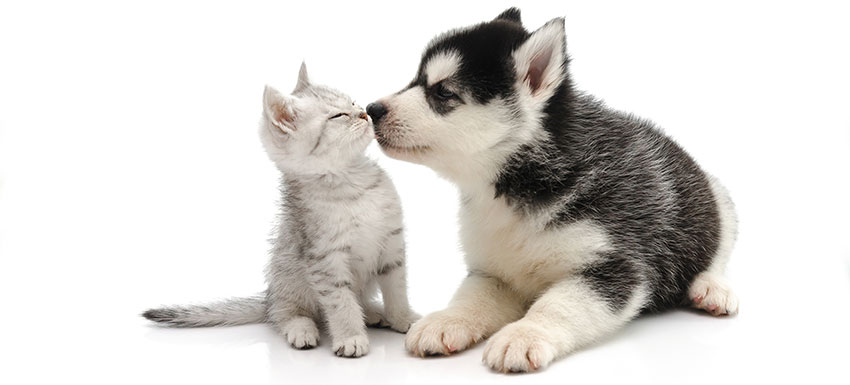

| TRANSPORTE A DOMICILIO: El transporte a domicilio, tanto de entrega como de recogida, se realiza los Lunes, martes, jueves y viernes, no festivos.(Miércoles y festivos de Madrid y nacionales NO prestamos el servicio de transporte), permaneciendo abiertos para que puedan traer o recoger ustedes a su perro dentro del horario. Si esta ha sido su elección, nos pondremos en contacto con usted el día anterior para concretar la hora aproximada de recogida o entrega, intentando adaptarnos, en la medida de lo posible, siendo nuestro objetivo principal minimizar el tiempo de estancia del perro en el vehículo de transporte. |
 | |
|
NO podemos garantizar que podamos subir al domicilio para recoger o entregar al animal, ya que influyen varios factores, como por ejemplo que la calle esté muy transitada y no tengamos opción para aparcar el vehículo; y sobre todo, en días de altas temperaturas bajo ningún concepto se puede parar la furgoneta y dejar desprovistos de aire acondicionado a los animales. Por lo que siempre les llamaremos cuando estemos llegando para que ustedes nos bajen al animal a pie de calle. Los animales deben ir provistos de un collar que no puedan quitarse si reculan; en ningún caso deben ir con arnés. Si aún así, nuestros profesionales consideran que no es seguro ese collar, les cogerán mediante el sistema que consideren mejor. PELUQUERÍA: Contamos con un servicio de higiene y peluquería. Cuando nos deje a su perro en 3 Patas puede aprovechar para que se lo devolvamos bañado y con su pelo arreglado. Nuestras instalaciones constan de varias zonas bien diferenciadas para poder separar a los perros por tamaños, y lo que es más importante; por carácter. |

| |
|
Entendemos el bienestar de la mascota como el conjunto de factores que participan en su calidad de vida, entre otros: su alimentación, su espacio vital, el ejercicio, el juego, su salud… ALIMENTACIÓN: Nos gusta que nuestras mascotas coman lo mejor, por eso apostamos por ROYAL CANIN. royal-canin-300x240 Por otro lado, sabemos que en algunas ocasiones nuestras mascotas necesitan seguir dietas especiales, en ese caso, el propietario debe de facilitarnos esa comida en particular (no conlleva descuento ni recargo alguno) MEDICACIÓN, SALUD Y CONDICIONES PARA EL ALOJAMIENTO: Todos los perros han de estar correctamente identificados. El día de entrada en la Residencia es necesario presentar su cartilla sanitaria, donde quede acreditado que el animal está vacunado de trivalente (o superior) y de la rabia. Igualmente aconsejamos que se haya provisto al animal de un tratamiento antiparásitos con las pipetas que se pueden conseguir para ese efecto. |

|